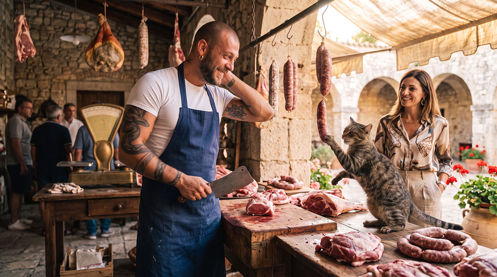
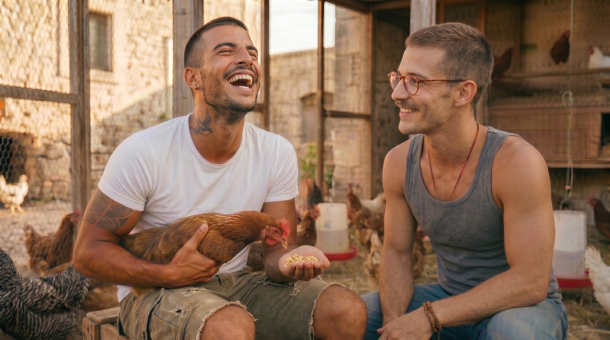

At Baglio San Michele, pets are a natural and precious part of daily life, rooted in the tradition of Sicilian farmsteads. Dogs, cats, poultry and small farmyard animals enrich the family environment, teach children care and responsibility, and contribute to the serenity of a slow and authentic existence, in harmony with creation and with the community.
General principle

Anyone may keep pets, provided they do not disturb neighbours and respect the requirements of peaceful coexistence set out in the Internal Regulations. The community welcomes animals as an educational opportunity, as companionship and as a bond with the land, while respecting quiet and collective well-being.
Types of animals and specific rules

Dogs and cats
Welcome without particular numerical limits. They are freely allowed in private spaces and, with good sense, also in common areas, provided they do not cause discomfort to other residents. Only for potentially dangerous animals may the use of a leash or additional containment measures be required, assessed case by case by the Chapter of the Wise.

Farmyard animals
Hens, rabbits, ducks, geese and similar animals are primarily allowed in units with a private plot (Phase 2) or in dedicated spaces. In the historic Baglio apartments they are possible subject to authorisation by the Chapter of the Wise, assessing the impact on coexistence. Animals already present in the Baglio’s common spaces (gardens, productive areas) are managed collectively for the benefit of the whole community.

Other animals
Assessed case by case according to livestock activities and the principle of self-sufficiency, always in line with Sicilian rural tradition.
Educational and community benefits

Living with animals offers many concrete benefits, fully consistent with the vision of Baglio San Michele as a traditional intentional community oriented toward family stability and the intergenerational transmission of values.
For children it is an irreplaceable opportunity for practical learning: daily care, respect for natural rhythms, understanding of the cycle of life and the development of a sense of responsibility. The youngest grow up in direct contact with nature, learning simple but formative gestures such as feeding the hens or stroking a dog — experiences that integrate and enrich family education.
From a community perspective, animals strengthen bonds between generations: the elderly pass on traditional knowledge about poultry management or the care of farmyard animals, while young families bring energy and new attentiveness. They also contribute to the community’s model of food self-sufficiency, producing fresh eggs, quality meat, or simply naturally controlling pests in the gardens.
This authentic rural dimension is one of the aspects that distinguish Baglio San Michele from urban or tourist contexts, offering a fuller life rooted in the Iblean territory.
Responsibility and good practices
Peaceful coexistence is based on individual responsibility and mutual attentiveness. Every family cares for its animals, ensuring their well-being and harmonious integration into the life of the Baglio.
Direct dialogue between neighbours is preferred in the event of any inconvenience, intervening with good sense and a spirit of collaboration. The Chapter of the Wise is available to support mediation where necessary, always respecting family freedom and the tradition of good neighbourliness typical of Sicilian rural communities.
Animals can naturally take part in the daily routine, contributing to the rural and family atmosphere of the Baglio: walks in the fields, presence in the courtyards, interactions with children in common spaces.
Pets at Baglio San Michele are not an accessory, but a living part of a community that has chosen to live in harmony with nature, tradition and the Christian values that have always inspired our project.
If you share this vision and wish to be part of a reality in which animals also find their natural place, we invite you to apply or contact us for further information.
For the most frequent questions about pets, see the FAQ page.
Would you like to know more?
Contact us to learn more about the rules and possibilities related to pets at Baglio San Michele.